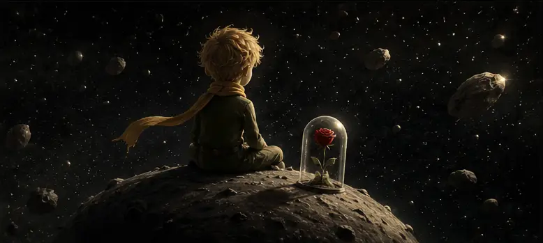
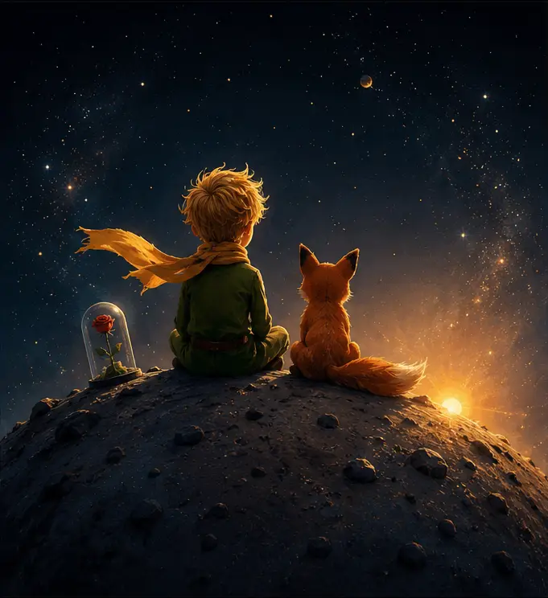

Existe um momento em que algo morre dentro de nós
Existe um momento na vida em que algo morre dentro de nós. Não é o corpo, não é a esperança e nem necessariamente a capacidade de sonhar. O que morre é aquela parte ingênua que acreditava que as pessoas enxergavam valor nas pessoas. Durante a infância e parte da juventude, carregamos dentro de nós um Pequeno Príncipe silencioso, observando o mundo com curiosidade e acreditando que os laços humanos são construídos pela afeição.

Conforme os anos passam, percebemos que muitas relações não são sustentadas por afeto, mas por conveniência. Algumas amizades desaparecem quando deixamos de ser úteis. Aos poucos surge uma suspeita difícil de ignorar: talvez boa parte das relações humanas seja construída sobre aquilo que podemos oferecer.
O funeral da ingenuidade
É nesse ponto que o Pequeno Príncipe começa a agonizar. Afinal, ele acreditava que cativar significava criar vínculos duradouros. Mas a vida adulta apresenta exceções demais para quem deseja continuar acreditando em regras.
"A maturidade não destrói apenas ilusões. Muitas vezes ela enterra também a capacidade de confiar sem medo."
Talvez por isso personagens como o Pequeno Príncipe e o príncipe Míchkin pareçam tão deslocados. A bondade é admirada nos livros, mas frequentemente explorada na vida real.

O preço da lucidez
Quando finalmente enxergamos os padrões, deixamos de chamar esse processo de perda. Passamos a chamá-lo de maturidade. O problema é que ganhar lucidez frequentemente significa perder encantamento.
Talvez a maior ironia da vida adulta seja justamente esta: para sobreviver à realidade, somos obrigados a sacrificar parte da ingenuidade que um dia nos tornou profundamente humanos.

"Os Pequenos Príncipes não desaparecem com o tempo. São lentamente executados pela realidade."